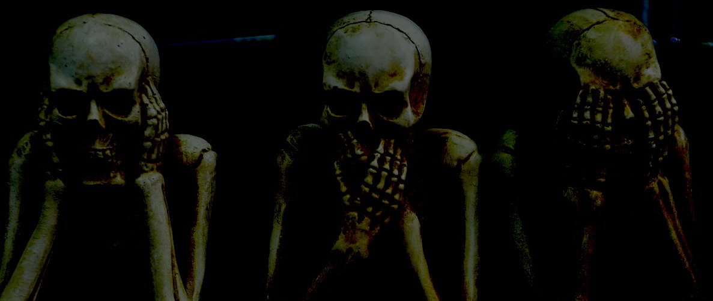
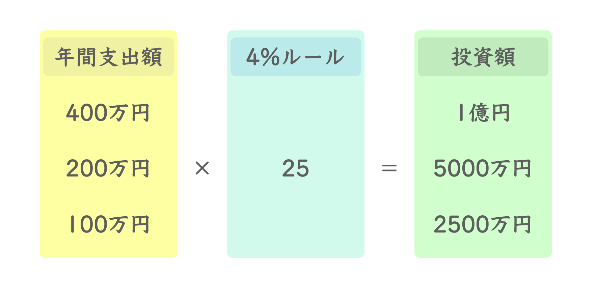
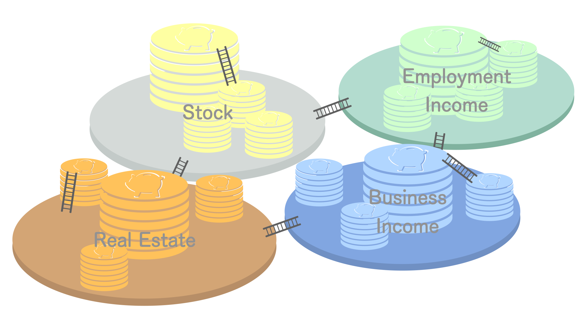
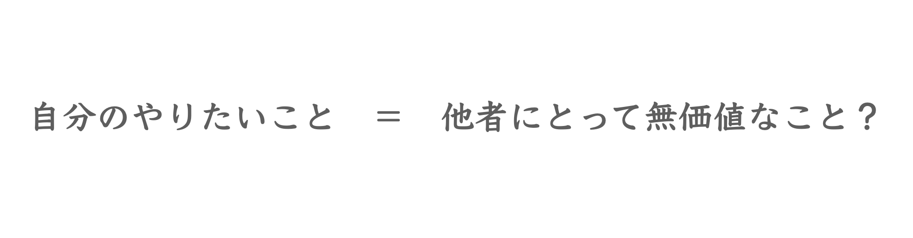
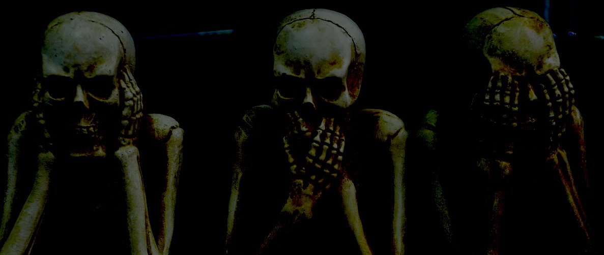
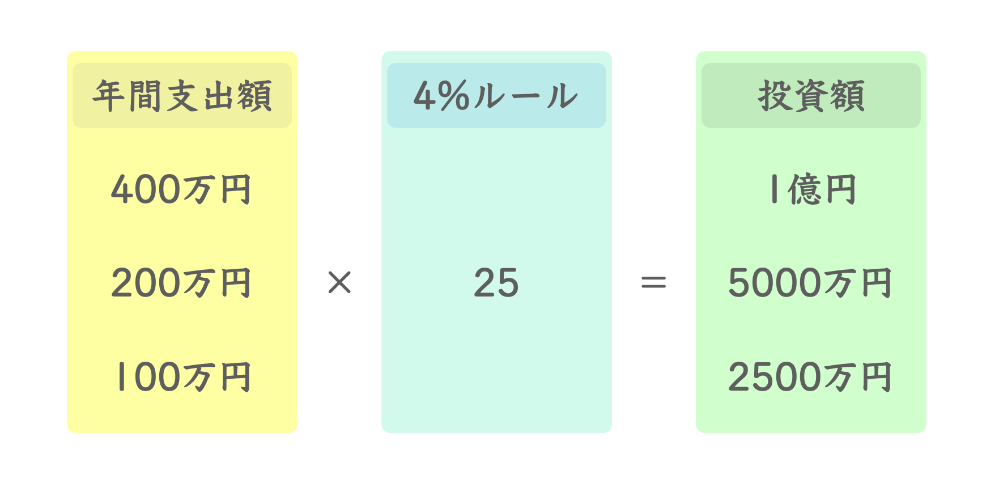
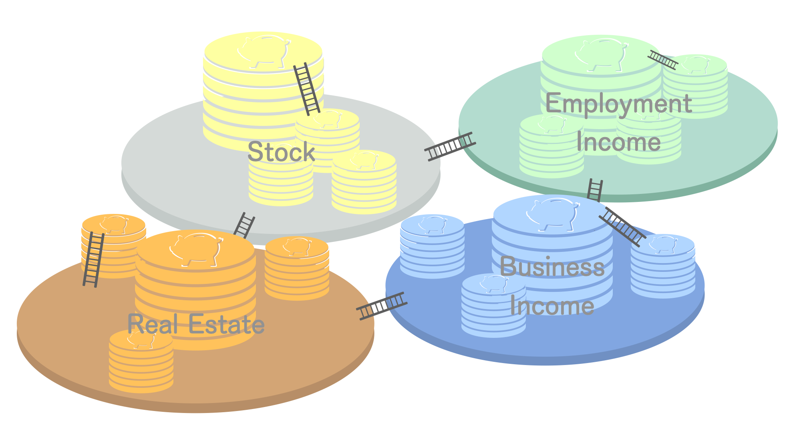
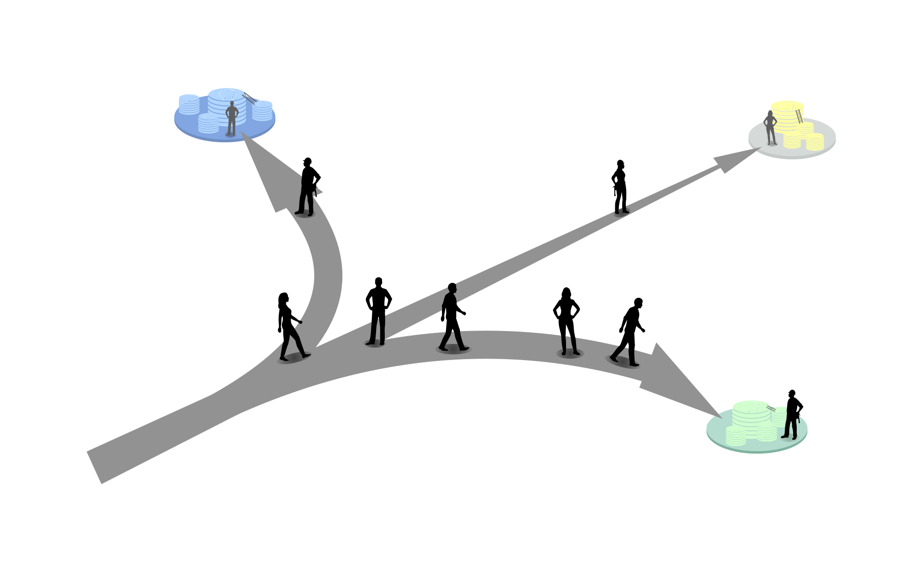
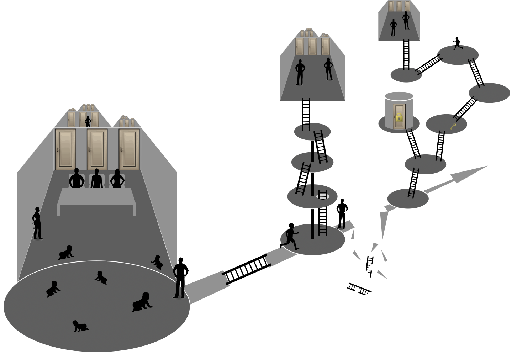
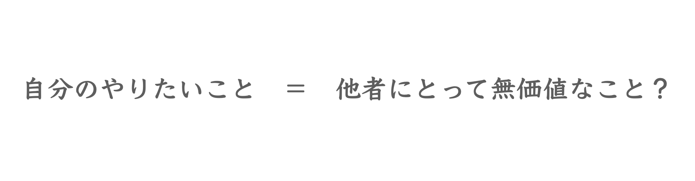

FIREについて
人生は一回きりだから、あなたには後悔のないように生きてほしい

思考停止で労働者として働くことを選択して本当によかったのだろうか
働き疲れた私はそんなふうに考えるようになっていました
同調圧力や周囲の価値観に従って物事を決めてしまったら、うまくいかなかった時に後悔します
私は自由と社会貢献を両立させることを人生の目的とし、その手段としてFIREを達成します！
経済的自立と早期退職を目指します
FIREを達成するには、資産が必要です
どんな資産をどれぐらいの持つかは人によって異なるとは思いますが、年間支出額の25倍を投資するのは株式投資でよく言われていますね
なぜ25倍するのかは、4%ルールと呼ばれるものが理由ですね

株式以外の資産を持つことができれば金額も少なくて済むので、FIRE実現により近づく事ができそう
経済的自立を達成する過程で自分と向き合い、自分と他者に費やす時間のバランスを考えながら生きたいです
会社員しか選択肢がないと考えていた時は、収入源の分散なんて考えもしませんでした
FIRE達成のために考えている収入は4つあります

目標：社会とのつながりや生活をより潤すために働きたい
目標：分散の意味でも複数の自分のビジネスを持ちたい
目標：非課税制度やクレカ積み立てなどを利用して地道に積み立てる！
目標：不動産の知識があまりないので、まずは勉強するところから始める
倹約は既に進めているので、あとは継続していく状態です
お金の有無に関わらず、自分の価値観を信じて使うべき時にお金を使えるようになることが最終目標です
それ以外の選択肢を考えることもせず、右にならえでその通りに過ごしてきました
もちろん会社員が安定していると考えるのが一般的だと思います
私も会社員として働くことが安定しており、良いところもたくさんあると思っています
ただ、会社員だけが唯一の働き方ではなく、他の働き方もできるのではないかと考えるようになりました
仕事に限らず、これから生きていく中でも大なり小なりあるとは思います
働く中で気付いたことは、お金以外の面でも会社にかなり依存しているということでした
比較的安定した収入や社会的地位と引き換えに、限りある自分の時間とエネルギーを捧げる事が必要です
それから、仕事内容や人間関係、職場環境が変化しても選択の余地はほぼないのも残念な点です
会社員として働いている限り、自分ではコントロールできないことがたくさんあります
収入に関しても、その大半が勤め先の一箇所に集中しているのは危険であると考えています
一定の給料と社会的地位をある程度保証されることは非常に魅力的だと思います
それでもせっかく人生の限られた時間とエネルギーを捧げるのに、成果物のほとんどが自分のものにならないのは悲しいと感じました
会社員として働く場合、基本的に課せられた仕事をこなすことだと思います
学生も宿題やレポートや試験に置き換えると基本的な構造は同じですよね
会社や学校によっては受動的ではなく主体的に労働・学習するように指導・教育される場合もあるかと思います
しかし、指導・教育されて主体的に行動することは本当に主体的な行動と言えるのでしょうか
ある部分だけを切り取れば主体的に見えても、全体で見た時に主体性があるかはわからないと考えています
その主体的に行動している土台の部分はあなたが本当に主体性を持って選択したものですか？
会社や学校の方針を否定したいわけではなく、あくまで私の場合は労働者としては本当の意味で主体的に働くことはできないと考えています
労働がつらく、逃れたいと思うようになったことは否めません
でも、このまま寿命を迎えるまで現状維持で本当に良いのだろうか
そんなふうに考える時間が、次第に増えていきました
もちろん労働者として働き続ける人生も、多数派として生きるという明確なメリットがあると思います
嫌なことをやることで、学びや成長の機会を得る可能性もあります
時間が無限にあるなら、自分にとって辛いことをする価値は相対的に大きくなるかもしれません
しかし人生の時間は有限です
同じ時間でやりたいことをして学びや成長に繋げることができるなら、そんな生き方が私の望む有意義な人生なのではないかと考えるようになりました

自分のやりたいことが他者にとってはほとんど無価値なことであれば、FIREの概念は成立しないかもしれません
逆に自分のやりたいことが人の役に立つことであれば、規模は違えど個人が会社と同じ存在意義を得ることになると考えています
私が生きたい人生は、私が主体性を持って取り組む活動を通して社会貢献することなのだとようやく気づくことができました
コントロールできないものをコントロールしようと思っても苦しいだけですよね
ただ、コントロールできない場合であっても諦めるのではなく、その環境ごと変えることを考えても良いのではないかと思います
環境を変えるためには、自分がその選択肢をとることができるだけの力が必要なので、その分ハードルは高くなります
例えば職場環境を変えたい場合は、信用や地位を高めて環境を変えたり、転職するなら自分の市場価値を高めたり、FIREであれば目標とする資産を蓄えるなど
FIREについても選択に責任を持つことができるならば、それは私やあなたにとって有意義な選択となるのではないかと考えています
自分の人生は自分以外の誰も責任をとってくれません
どのような選択をする場合でも、自分で責任を持つことができるならば、命が尽きる時には自分の人生を肯定し、納得することができると私は信じています
有意義な人生と他者への貢献を両立させるために、自分の時間を使っていけたらいいですね
この記事が私の弟やあなたの役に立ちますように
記事内容に誤りなどがございましたら、
Twitterなどで優しくお知らせいただけると幸いです
2022/02/20

思考停止で労働者として働くことを選択して本当によかったのだろうか
働き疲れた私はそんなふうに考えるようになっていました
同調圧力や周囲の価値観に従って物事を決めてしまったら、うまくいかなかった時に後悔します
私は自由と社会貢献を両立させることを人生の目的とし、その手段としてFIREを達成します！
私のFIRE計画
FIRE : Financial Independence Retire Early経済的自立と早期退職を目指します
FIREを達成するには、資産が必要です
どんな資産をどれぐらいの持つかは人によって異なるとは思いますが、年間支出額の25倍を投資するのは株式投資でよく言われていますね
なぜ25倍するのかは、4%ルールと呼ばれるものが理由ですね

株式以外の資産を持つことができれば金額も少なくて済むので、FIRE実現により近づく事ができそう
経済的自立を達成する過程で自分と向き合い、自分と他者に費やす時間のバランスを考えながら生きたいです
収入の分散
複数の収入源がある方が安心できますよね会社員しか選択肢がないと考えていた時は、収入源の分散なんて考えもしませんでした
FIRE達成のために考えている収入は4つあります
- 給与所得
- 自分のビジネス（副業）
- 株式
- 不動産

給与所得
安定的だが、時間的・精神的拘束は強めで主体的に取り組みにくい目標：社会とのつながりや生活をより潤すために働きたい
自分のビジネス（副業や事業）
安定しているかはビジネスによる。精神面では好きでやっているので基本的に苦痛はなく、収入も青天井目標：分散の意味でも複数の自分のビジネスを持ちたい
株式
最初のリターンは小さいが、長期目線ではどの収入源よりも期待できる目標：非課税制度やクレカ積み立てなどを利用して地道に積み立てる！
不動産
災害や空室などのリスクはあるが、比較的安定したキャッシュフローが魅力的！REITも選択肢の一つか？目標：不動産の知識があまりないので、まずは勉強するところから始める
支出のコントロール
支出面に関しては、FIREしても倹約を怠らないことが目標です（自戒）倹約は既に進めているので、あとは継続していく状態です
お金の有無に関わらず、自分の価値観を信じて使うべき時にお金を使えるようになることが最終目標です
FIREと向き合い、考えたこと
自分で考えることをやめ、労働者として働くことを選択した人生
会社で働くことが安心安全だから就職しよう！ それが当然で理想的な歩むべき人生だと思い込んでいましたそれ以外の選択肢を考えることもせず、右にならえでその通りに過ごしてきました
もちろん会社員が安定していると考えるのが一般的だと思います
私も会社員として働くことが安定しており、良いところもたくさんあると思っています
ただ、会社員だけが唯一の働き方ではなく、他の働き方もできるのではないかと考えるようになりました
会社員として働くデメリット
会社員としての経験は、社会的な意義を実感することやまったく無意味に感じること、楽しいことや嫌なこともたくさんありました仕事に限らず、これから生きていく中でも大なり小なりあるとは思います
働く中で気付いたことは、お金以外の面でも会社にかなり依存しているということでした
比較的安定した収入や社会的地位と引き換えに、限りある自分の時間とエネルギーを捧げる事が必要です
それから、仕事内容や人間関係、職場環境が変化しても選択の余地はほぼないのも残念な点です
会社員として働いている限り、自分ではコントロールできないことがたくさんあります
収入に関しても、その大半が勤め先の一箇所に集中しているのは危険であると考えています
一定の給料と社会的地位をある程度保証されることは非常に魅力的だと思います
それでもせっかく人生の限られた時間とエネルギーを捧げるのに、成果物のほとんどが自分のものにならないのは悲しいと感じました
主体的に働くとは？
会社員として働く場合、基本的に課せられた仕事をこなすことだと思います
学生も宿題やレポートや試験に置き換えると基本的な構造は同じですよね
会社や学校によっては受動的ではなく主体的に労働・学習するように指導・教育される場合もあるかと思います
しかし、指導・教育されて主体的に行動することは本当に主体的な行動と言えるのでしょうか
ある部分だけを切り取れば主体的に見えても、全体で見た時に主体性があるかはわからないと考えています
その主体的に行動している土台の部分はあなたが本当に主体性を持って選択したものですか？
会社や学校の方針を否定したいわけではなく、あくまで私の場合は労働者としては本当の意味で主体的に働くことはできないと考えています
私が生きたいと思う人生はどんな人生だろう？
働く中で何のために生きるのか、人生の意味を考えるようになりました労働がつらく、逃れたいと思うようになったことは否めません
でも、このまま寿命を迎えるまで現状維持で本当に良いのだろうか
そんなふうに考える時間が、次第に増えていきました
もちろん労働者として働き続ける人生も、多数派として生きるという明確なメリットがあると思います
嫌なことをやることで、学びや成長の機会を得る可能性もあります
時間が無限にあるなら、自分にとって辛いことをする価値は相対的に大きくなるかもしれません
しかし人生の時間は有限です
同じ時間でやりたいことをして学びや成長に繋げることができるなら、そんな生き方が私の望む有意義な人生なのではないかと考えるようになりました

自分のやりたいことが他者にとってはほとんど無価値なことであれば、FIREの概念は成立しないかもしれません
逆に自分のやりたいことが人の役に立つことであれば、規模は違えど個人が会社と同じ存在意義を得ることになると考えています
私が生きたい人生は、私が主体性を持って取り組む活動を通して社会貢献することなのだとようやく気づくことができました
選択の責任
問題にぶつかった時、私はコントロール可能か否かに分け、コントロールできるものに注力することを心がけていますコントロールできないものをコントロールしようと思っても苦しいだけですよね
ただ、コントロールできない場合であっても諦めるのではなく、その環境ごと変えることを考えても良いのではないかと思います
環境を変えるためには、自分がその選択肢をとることができるだけの力が必要なので、その分ハードルは高くなります
例えば職場環境を変えたい場合は、信用や地位を高めて環境を変えたり、転職するなら自分の市場価値を高めたり、FIREであれば目標とする資産を蓄えるなど
FIREについても選択に責任を持つことができるならば、それは私やあなたにとって有意義な選択となるのではないかと考えています
自分の人生は自分以外の誰も責任をとってくれません
どのような選択をする場合でも、自分で責任を持つことができるならば、命が尽きる時には自分の人生を肯定し、納得することができると私は信じています
有意義な人生と他者への貢献を両立させるために、自分の時間を使っていけたらいいですね
この記事が私の弟やあなたの役に立ちますように
記事内容に誤りなどがございましたら、
Twitterなどで優しくお知らせいただけると幸いです
2022/02/20